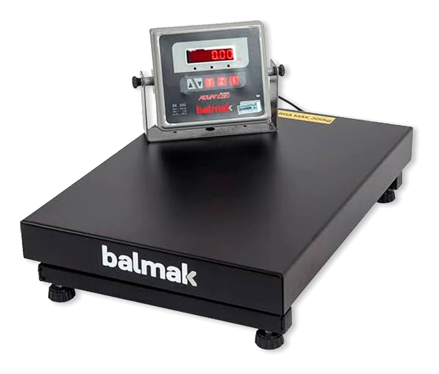

Avalia. Conserta. Lacra. Conserto e manutenção de balanças em Rio Claro-SP.
Técnicos da casa, orçamento antes de mexer. Manutenção preventiva e corretiva, troca de peças, lacre e regularização junto ao IPEM-SP, aqui em Rio Claro e região.

- Autorizada pelo IPEM-SP
- Técnicos da casa
- 5,0 no Google (56 avaliações)
- Rio Claro-SP e região
- Manutenção preventiva
- Corretiva
- Troca de peças
- Lacre
- Regularização IPEM-SP
Como funciona
Da bancada ao balcão.
Cinco estações, do primeiro contato até a balança de volta ao trabalho. Sem enrolação e com tudo registrado.
Chamado
Chame no WhatsApp e conte o modelo, o defeito e se o lacre está inteiro. Se puder, mande uma foto.
Diagnóstico
Avaliamos a balança na bancada ou no seu estabelecimento e passamos o orçamento antes de mexer.
Reparo
Conserto, ajustes e troca de peças com os técnicos da casa.
Lacre
Como oficina autorizada, lacramos a balança e registramos tudo na ordem de serviço.
De volta
Sua balança volta ao balcão pronta para a verificação do IPEM.
Que balança a gente atende
Do balcão à plataforma.
Trabalhamos com as marcas Toledo, Balmak, Filizola, Urano, Welmy, Micheletti e outras. Se a sua não está na lista, pergunte.
- A
Com impressora de etiquetas
Balanças de açougue, padaria e frios que pesam, calculam e imprimem a etiqueta com código de barras.
Ver modelos - B
Computadoras e pesadoras
As balanças do dia a dia do balcão, do hortifrúti ao pet shop.
Computadoras Pesadoras - C
De checkout
Balanças embutidas no caixa e integradas ao PDV do supermercado.
Ver modelos - D
Industriais e plataformas
Recebimento, expedição e conferência em indústrias e depósitos.
Ver modelos - E
Médico-hospitalares
Balanças de farmácias, clínicas, consultórios e academias.
Ver modelos
Preventiva e corretiva
O que muda na sua balança.
A corretiva resolve quando a balança para. A preventiva evita que ela pare no pior momento — e mantém tudo em ordem para a fiscalização.
- 01
Parada no pico do movimento
Revisão no horário combinado
Preventiva - 02
Peso oscilando, display apagado
Diagnóstico e troca de peças
Corretiva - 03
Etiqueta saindo falhada
Impressora revisada e ajustada
Corretiva
Balança e IPEM-SP
A fiscalização não avisa.
O IPEM-SP verifica as balanças comerciais (a famosa aferição) uma vez por ano, sem aviso prévio. Veja o que está em jogo — e deixe a sua pronta para a verificação.
- 01
1× por ano
Verificação anual, sem aviso. Aprovada, a balança recebe lacres e selo novos. Balança parada na loja também é fiscalizada.
- 02
Lacre rompido
Balança com lacre rompido ou danificado fica sujeita a multa. Não use: chame uma oficina autorizada.
- 03
Reprovada
Precisa ser consertada por oficina autorizada e pode passar por nova verificação. Se o erro prejudicar o consumidor, pode ser interditada.
- 04
R$ 100 R$ 1,5 mi
É a faixa de multas prevista na Lei 9.933/99 para quem descumpre as regras de metrologia.
Oficina autorizada pelo IPEM-SP. Fazemos a manutenção, o reparo e a regularização: deixamos sua balança pronta para a verificação do IPEM.
Perguntas frequentes
Balança e IPEM, sem letra miúda.
Ficou alguma dúvida sobre a sua balança? Mande uma foto pelo WhatsApp. Nota fiscal e SAT estão na página do BC System.
Perguntar no WhatsAppA aferição — o nome oficial é verificação — é feita pelo IPEM-SP, uma vez por ano e sem aviso. A gente faz a manutenção, o conserto e a regularização, e deixa a sua balança pronta para essa verificação.
É a empresa autorizada pelo Inmetro/IPEM-SP a consertar balanças e romper lacres. A Balanças.com é oficina autorizada pelo IPEM-SP. A lista oficial de oficinas fica em servicos.rbmlq.gov.br/Oficina.
Em geral, sim. Ela sai lacrada, com a marca “Reparado”, e fica sujeita à verificação após reparo. Se foi interditada, siga o que diz o termo. Guarde a ordem de serviço e a nota fiscal.
Antes de usar, peça a uma oficina autorizada para avaliar. Confira o selo do Inmetro, a PAM (Portaria de Aprovação de Modelo) e os lacres.
Balança parada é venda parada.
Fale com a nossa oficina. Atendemos Rio Claro e região, de segunda a sábado.